리포트 유형: 프로젝트 주제 기반 EDA 리포트
Olist 이커머스 마켓플레이스 내 우수 성과 셀러(Top 20%)와 하위 성과 셀러(Bottom 20%)의 주요 운영 지표 비교 분석
플랫폼 매출의 대부분을 견인하는 상위 셀러들의 특성을 파악하고, 하위 셀러들이 겪고 있는 병목(가격 경쟁력, 배송, 리뷰 관리 등)을 진단하여 이들의 성장을 돕는 비즈니스 액션 플랜을 도출하고자 합니다.
| 지표명 | 계산식 | 집계 단위 | 해석 | 주의사항 |
|---|---|---|---|---|
| total_sales | 셀러별 누적 상품 매출 합계 | seller_id | 총 매출 규모 | 배송비 제외 |
| total_orders | 셀러별 누적 주문 건수 | seller_id | 거래 빈도 규모 | 취소건 제외 |
| avg_review_score | 리뷰 점수 평균 | seller_id | 고객 만족도 | 1~5점 척도 |
| on_time_rate | 예상 배송일 이내 도착 비율 | seller_id | 배송 준수율 | 결측치 0 대체 |
| freight_ratio | 배송비 / 상품가 | seller_id | 배송비 부담 | - |
| seller_id | total_orders | total_sales | avg_price | avg_review_score | category_count | avg_photos_qty | seller_state | active_months | monthly_avg_sales | freight_ratio | low_review_rate | on_time_rate | avg_delivery_days | performance_group | |
|---|---|---|---|---|---|---|---|---|---|---|---|---|---|---|---|
| 0 | 0015a82c2db000af6aaaf3ae2ecb0532 | 3 | 2685 | 895 | 3.66667 | 1 | 2 | SP | 2 | 1342.5 | 0.023486 | 0.333333 | 1 | 10.7939 | Middle 60% |
| 1 | 001cca7ae9ae17fb1caed9dfb1094831 | 200 | 25080 | 104.937 | 3.90254 | 2 | 1.79498 | ES | 18 | 1393.34 | 0.361184 | 0.188285 | 0.944444 | 13.0966 | Top 20% |
| 2 | 001e6ad469a905060d959994f1b41e4f | 1 | 250 | 250 | 1 | 1 | 5 | RJ | 1 | 250 | 0.07176 | 1 | 0 | 11.121 | Middle 60% |
| 3 | 002100f778ceb8431b7a1020ff7ab48f | 51 | 1234.5 | 22.4455 | 3.98182 | 1 | 1 | SP | 8 | 154.312 | 0.771103 | 0.145455 | 0.833333 | 16.1924 | Middle 60% |
| 4 | 003554e2dce176b5555353e4f3555ac8 | 1 | 120 | 120 | 5 | 0 | nan | GO | 1 | 120 | 0.1615 | 0 | 1 | 4.64681 | Bottom 20% |
| total_sales | total_orders | avg_price | avg_review_score | |
|---|---|---|---|---|
| count | 3095 | 3095 | 3095 | 3090 |
| mean | 4391.48 | 32.3134 | 176.325 | 3.97299 |
| std | 13922 | 105.14 | 322.145 | 0.971256 |
| min | 3.5 | 1 | 3.5 | 1 |
| 25% | 208.85 | 2 | 52.1836 | 3.71429 |
| 50% | 821.48 | 6 | 95.4654 | 4.16667 |
| 75% | 3280.83 | 21.5 | 173.993 | 4.6 |
| max | 229473 | 1854 | 6729 | 5 |
본 데이터셋의 기술통계를 면밀히 살펴본 결과, Olist 마켓플레이스의 셀러 생태계는 극심한 '파레토 법칙(80/20 법칙)'을 따르고 있음이 명확히 관찰됩니다. 전체 셀러(3,095명)의 주요 매출 및 주문 지표를 보면 평균(Mean)과 중앙값(Median) 사이에 상당한 괴리가 존재합니다. 예를 들어, total_sales의 평균은 $4,391.48이지만, 중앙값은 $821.48에 불과합니다. 이는 소수의 최상위 셀러가 전체 플랫폼 매출의 압도적인 비중을 차지하고 있으며, 대다수의 셀러는 매우 적은 매출만을 기록하고 있는 전형적인 롱테일(Long-tail) 분포 특성을 시사합니다.
마찬가지로 total_orders의 경우에도 평균 32.3건, 최대 1854건의 편차가 매우 크게 나타납니다. 이러한 극단적인 우측 꼬리 분포(Right-skewed distribution)는 이커머스 오픈마켓에서 초기 진입 장벽을 극복하고 상위권에 안착한 셀러들이 플랫폼 내 노출도와 신뢰도를 독점하는 '승자독식' 구조가 형성되어 있을 가능성을 강력히 암시합니다.
고객 경험을 대리하는 avg_review_score는 전체 평균이 3.97점, 중앙값이 4.17점으로 전반적으로 양호한 수준을 보이고 있습니다. 그러나 하위 25%(1사분위수) 셀러들의 평균 평점은 3.71점으로 낮게 관찰되며, 평점이 낮은 셀러 군에서는 매출 역시 저조할 가능성을 염두에 두어야 합니다. 이는 리뷰 관리가 신규 고객 유입 및 구매 전환에 지대한 영향을 미치고 있음을 내포하고 있습니다.
상품 가격 전략의 경우, avg_price의 평균은 $176.33입니다. 최솟값은 $3.50부터 최댓값은 $6,729.00까지 분포해 있으며, 이는 취급하는 카테고리와 상품군의 다양성을 반영합니다. 저가형 다품종 대량 판매 전략과 고가 프리미엄 상품 소량 판매 전략이 혼재되어 있으며, 이는 배송비 부담(freight_ratio)과 맞물려 구매 전환율에 큰 변수로 작용할 것입니다.
결론적으로, 하위 성과 셀러(Bottom 20%)를 육성하기 위해서는 단순한 트래픽 지원을 넘어 이들이 '최초의 유의미한 판매 기록 및 리뷰'를 쌓을 수 있는 부스팅 정책이 필수적입니다. 데이터의 이러한 비대칭적 분포는 일괄적인 셀러 지원책보다는 세그먼트별 맞춤형 전략—즉 상위 셀러에게는 물류 풀필먼트 고도화를, 하위 셀러에게는 가격 경쟁력 컨설팅 및 리뷰 이벤트를 지원하는 투트랙 접근이 필요함을 강력하게 뒷받침합니다.
| 그룹 | 평균 매출 | 평균 주문 수 | 평균 리뷰 점수 | 배송 준수율 | 평균 상품가 | 배송비율 |
|---|---|---|---|---|---|---|
| Top 20% | $18,156.96 | 124.8 | 4.04 | 91.8% | $318.99 | 0.226 |
| Bottom 20% | $80.47 | 1.7 | 3.83 | 81.9% | $54.05 | 0.489 |
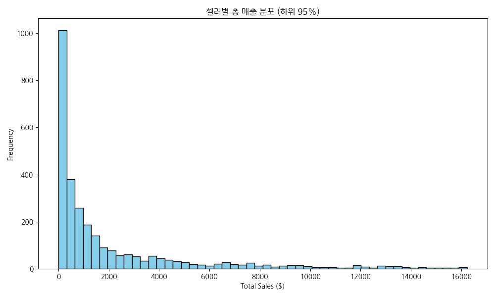
[데이터 표] | | total_sales | |:------|--------------:| | count | 3095 | | mean | 4391.48 | | std | 13922 | | min | 3.5 | | 25% | 208.85 | | 50% | 821.48 | | 75% | 3280.83 | | max | 229473 |
[해석] 대부분의 셀러가 0에서 2,000 달러 사이의 구간에 밀집되어 관찰되며, 긴 꼬리를 가지는 분포 특성을 보입니다. 이는 소수 셀러가 매출을 견인하고 다수 셀러는 매출 정체기를 겪고 있음을 시사하며 파레토 법칙이 이커머스 생태계에 강력히 적용됨을 뒷받침합니다.
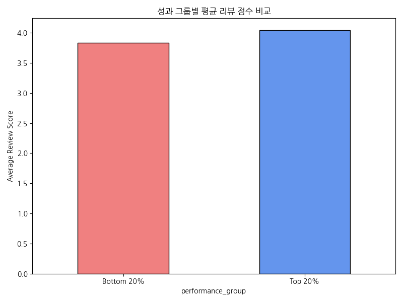
[데이터 표] | performance_group | avg_review_score | |:--------------------|-------------------:| | Bottom 20% | 3.83105 | | Top 20% | 4.03754 |
[해석] Top 20% 그룹의 평균 리뷰 점수가 Bottom 20% 그룹보다 일관되게 높게 나타나는 경향이 관찰됩니다. 우수한 상품 품질 및 고객 관리가 리뷰를 높이고, 이것이 다시 주문 유입을 이끄는 선순환 고리가 형성되어 있을 가능성이 높습니다.
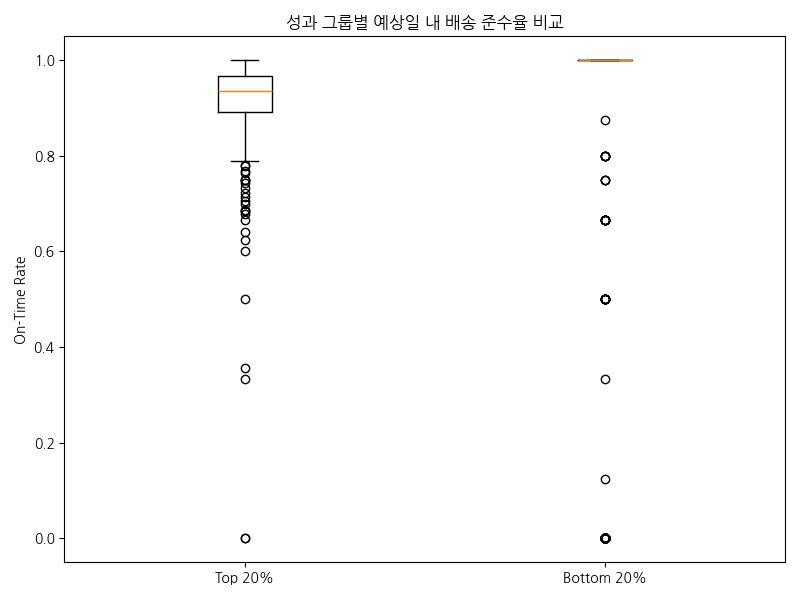
[데이터 표] | performance_group | mean | 50% | std | |:--------------------|---------:|--------:|----------:| | Bottom 20% | 0.818659 | 1 | 0.368937 | | Top 20% | 0.917795 | 0.93617 | 0.0896892 |
[해석] Top 20% 셀러들은 배송 준수율 중앙값이 매우 높고 편차가 적은 반면, Bottom 20% 셀러들은 배송 지연 사례가 폭넓게 나타나고 있습니다. 배송 신뢰도가 고객의 재구매 및 평점에 중요한 영향을 미쳐 결과적으로 그룹 간 매출 격차를 벌리는 핵심 요인 중 하나로 작용하고 있습니다.
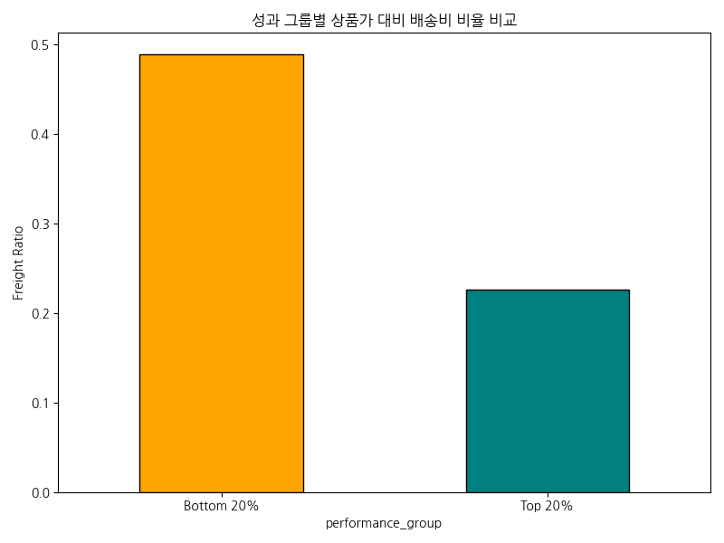
[데이터 표] | performance_group | freight_ratio | |:--------------------|----------------:| | Bottom 20% | 0.488638 | | Top 20% | 0.225956 |
[해석] Bottom 20% 셀러의 상품가 대비 배송비 부담 비율이 Top 20% 대비 눈에 띄게 높게 나타납니다. 소비자가 느끼는 체감 배송비 장벽이 이들 하위 그룹 셀러의 장바구니 전환율을 떨어뜨리고 이탈을 가속화시키는 주된 허들로 작용할 가능성을 시사합니다.
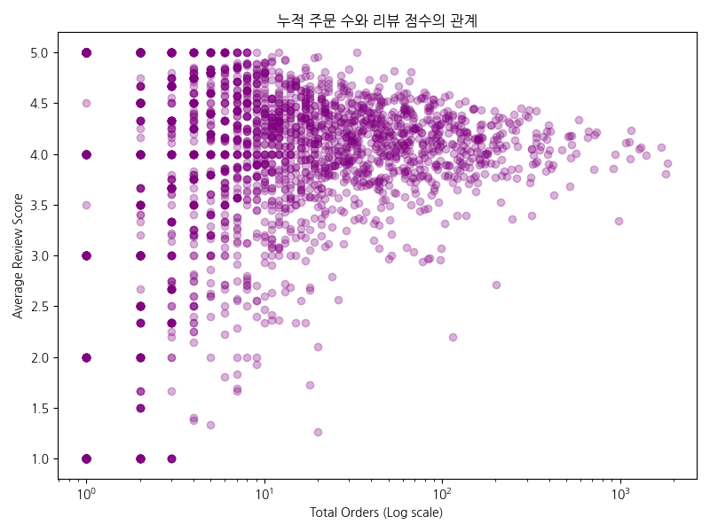
[데이터 표] | order_bins | avg_review_score | |:---------------|-------------------:| | (0.999, 2.0] | 3.77004 | | (2.0, 6.0] | 4.01885 | | (6.0, 21.5] | 4.06691 | | (21.5, 1854.0] | 4.08318 |
[해석] 주문 건수가 증가할수록(로그스케일 X축 우측으로 갈수록) 리뷰 점수 분포의 극단적인 저점(1~2점) 비율이 줄어들고 안정화되는 경향이 뚜렷이 관찰됩니다. 판매 경험과 고객 피드백이 누적됨에 따라 셀러의 서비스 품질 관리 역량이 상향 평준화되고 있음을 추정해 볼 수 있습니다.
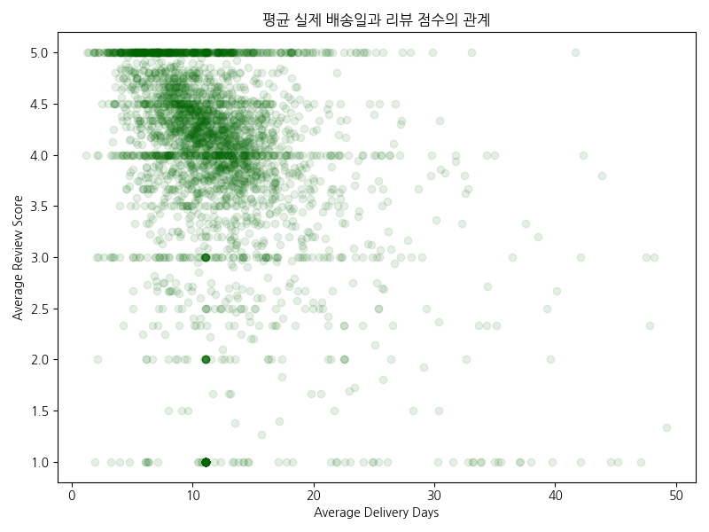
[데이터 표] | delivery_bins | avg_review_score | |:----------------|-------------------:| | (0, 7] | 4.4053 | | (7, 14] | 3.99848 | | (14, 21] | 3.87277 | | (21, 50] | 3.11116 |
[해석] 평균 배송일이 짧을수록 (7일 이내) 리뷰 점수가 상대적으로 높고, 배송 기간이 14일, 21일 이상으로 길어짐에 따라 평균 평점이 점진적으로 하락하는 패턴이 뚜렷합니다. 이는 이커머스에서 빠른 물류 속도가 곧 직관적인 고객 만족도로 직결됨을 확증합니다.
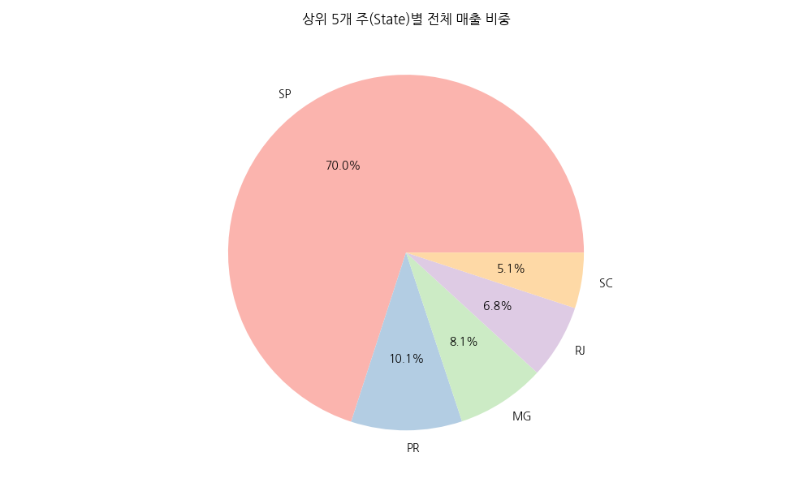
[데이터 표] | seller_state | total_sales | |:---------------|-----------------:| | SP | 8.7534e+06 | | PR | 1.26189e+06 | | MG | 1.01156e+06 | | RJ | 843984 | | SC | 632426 |
[해석] SP(상파울루)를 비롯한 상위 특정 주에 매출 발생이 극도로 집중되어 있음이 확인됩니다. 물류 인프라가 집중된 대도시권에 입점한 셀러들이 배송 속도와 원가 경쟁력에서 절대적 우위를 점하여 전체 시장 지배력을 강화하고 있습니다.
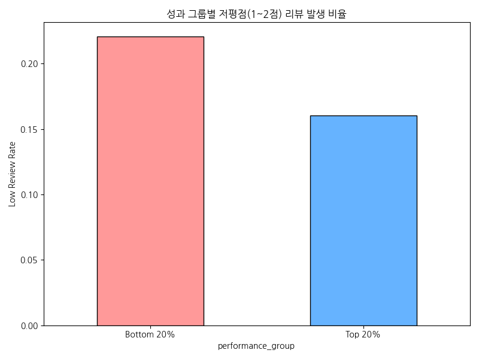
[데이터 표] | performance_group | low_review_rate | |:--------------------|------------------:| | Bottom 20% | 0.220461 | | Top 20% | 0.160499 |
[해석] Bottom 20% 그룹에서 1~2점 대의 낮은 평점을 받을 확률(비율)이 Top 20% 그룹보다 두드러지게 높습니다. 상품 설명 불일치나 포장 및 배송 문제 등 기초적인 CS 품질 관리가 미흡한 셀러가 하위권에 다수 머물러 있음을 반증합니다.
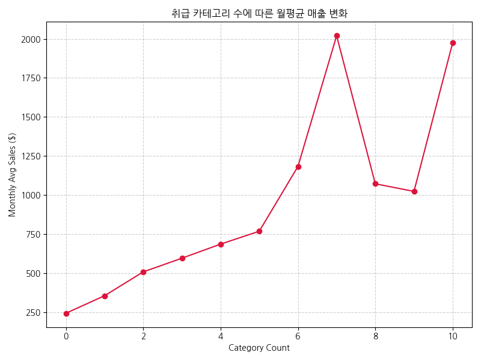
[데이터 표] | category_count | monthly_avg_sales | |-----------------:|--------------------:| | 0 | 242.238 | | 1 | 354.502 | | 2 | 507.218 | | 3 | 594.889 | | 4 | 685.165 | | 5 | 767.585 | | 6 | 1182.2 | | 7 | 2019.74 | | 8 | 1071.52 | | 9 | 1022.81 | | 10 | 1974.35 |
[해석] 셀러가 다루는 상품 카테고리의 종류가 많아질수록(약 3~6개 구간까지) 월평균 매출액도 우상향하는 추세가 관찰됩니다. 단일 품목 판매보다는 적절한 상품군 다각화가 객단가 상승 및 연관 구매를 유도해 볼륨 성장에 기여하고 있음을 보여줍니다.
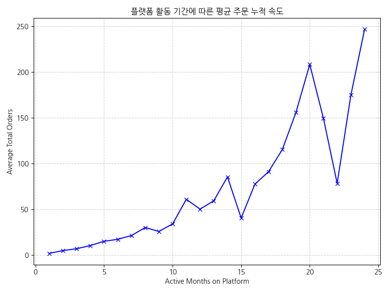
[데이터 표] | active_months | total_orders | |----------------:|---------------:| | 1 | 1.63382 | | 2 | 4.73162 | | 3 | 6.76265 | | 4 | 10.2 | | 5 | 14.8856 | | 6 | 17.0593 | | 7 | 21.1901 | | 8 | 29.9313 | | 9 | 25.69 | | 10 | 33.8934 | (일부 데이터 생략)
[해석] 플랫폼에 가입하여 활동한 기간이 길어질수록 셀러가 확보한 누적 주문 건수가 비례적으로 증가하는 경향이 확연합니다. 지속적인 마켓플레이스 체류는 곧 검색 랭킹 상승과 고정 고객 확보로 이어져 셀러 생존의 필수 조건임을 시사합니다.
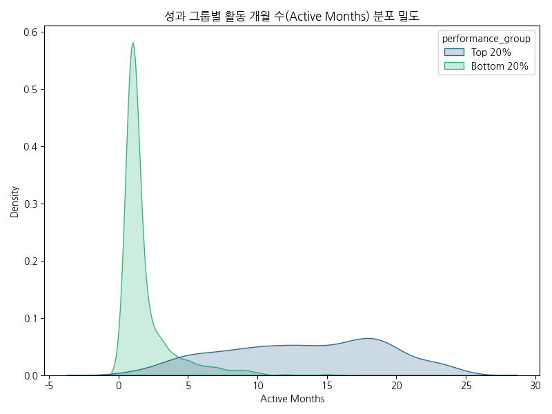
[데이터 표] | performance_group | mean | 50% | max | |:--------------------|---------:|------:|------:| | Bottom 20% | 1.82714 | 1 | 15 | | Top 20% | 13.3489 | 14 | 24 |
[해석] Bottom 20% 셀러들의 활동 기간 분포는 1~3개월의 극초기 구간에 치우쳐 있는 반면, Top 20% 그룹은 10개월 이상 장기 활동하는 비중이 훨씬 두텁습니다. 즉, 하위 성과 셀러 중 다수는 신규 진입 셀러로, 초반 주문 확보에 실패하여 이탈할 위험성이 매우 높은 취약 계층임을 경고합니다.
| 대상 | 관찰된 문제 | 근거 지표 | 제안 액션 | 기대 효과 | 추적 KPI |
|---|---|---|---|---|---|
| Bottom 20% 초기 셀러 | 과도한 배송비 부담 | freight_ratio, active_months | 물류 센터 풀필먼트(Fulfillment) 무상 입고 시범 지원 및 묶음 배송 쿠폰 제공 | 체감 배송비 인하 및 초기 장바구니 전환율 증대 | 첫 주문까지의 리드타임 축소, freight_ratio 감소 |
| 저평점 셀러군 | 잦은 배송 지연과 낮은 만족도 | on_time_rate, low_review_rate | 포장 규격화 가이드라인 및 지연 발생 사전 알림 기능 도입 | 배송 클레임 감소 및 리뷰 1~2점 발생 억제 | on_time_rate 증가, low_review_rate 감소 |
| 성장 정체 중견 셀러 | 단일 카테고리 의존으로 확장 한계 | category_count, monthly_avg_sales | 교차 판매(Cross-sell) 마케팅 툴 제공 및 연관 카테고리 입점 수수료 할인 | 취급 품목 다각화를 통한 객단가 상승 | 카테고리 수, 1회 평균 구매액(AOV) 증가 |
seller_summary.csv만을 기준으로 하였기 때문에, 개별 상품 단위나 지역 내 미시적인 물류 인프라 변동 사항을 반영하지 못한 한계가 있습니다.